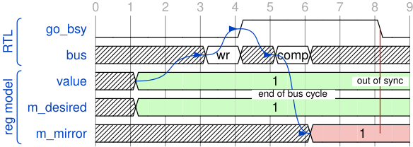
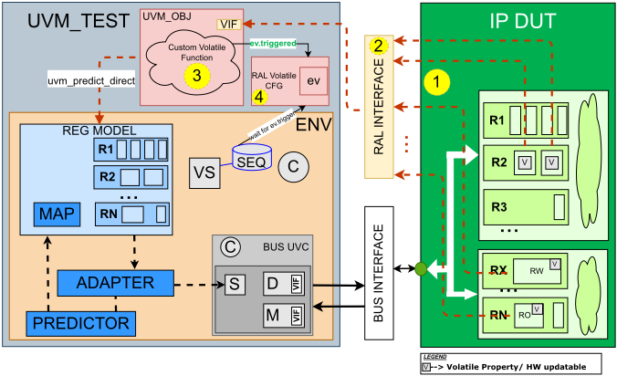

驾驭易变性：UVM RAL 中寄存器同步的创新策略
论文针对 UVM RAL 中 volatile 寄存器字段被硬件异步更新后寄存器模型镜像值（m_mirror）失步、而 UVM Cookbook 又未提供标准同步方法的问题展开。现有 auto/explicit/passive prediction 均依赖总线事务，无法感知不出现在总线上的硬件自主更新，导致 get() 返回旧值、set()+update() 不发起实际总线写等错误验证意图，测试编写者只能在 sequence 中手工轮询。方法上，作者用 Python 脚本解析类 IP-XACT 的 XML 寄存器描述，自动生成 RAL 监测 interface、volatile 配置对象、testbench 连接文件与回调文件；interface 内通过 RAL_DETECT_AND_NOTIFY_CHANGE_MACRO 监测 RTL 信号变化，经 proxy utility 对象先以 UVM_PREDICT_DIRECT + UVM_BACKDOOR 路径 predict 更新寄存器模型，再触发携带新值 ral_obj 的 uvm_event，以事件驱动取代轮询。该方案已在 Intel Power Management IP 生产验证环境部署，支持 2500+ 个 volatile 字段，每 CPU 秒多处理 20% 的仿真 cycle，sequence 开发时间减少 30%、相关代码行数减少 65%。论文同时明确该机制只更新模型、不校验预测值的正确性。
UVM RAL 缺乏将寄存器模型与硬件同步的标准化方法：volatile 字段可被硬件异步改变，且这些变化不出现在总线接口上，现有基于总线事务的 prediction 机制（auto/explicit/passive）均无法更新模型，造成镜像值过时、regmodel.field.get() 返回旧值、set()+update() 不发起实际 frontdoor/backdoor 写等错误验证意图；测试编写者只能在 sequence 或 component 中持续轮询，UVM Cookbook 也未给出标准做法。
提出自动化的 volatile 检测与预测更新基础设施：Python 脚本解析类 IP-XACT 的 XML，提取 volatile 寄存器/字段的访问类型（如 RO/V、RW/V）与对应 RTL 信号层级路径（ValRTLSignal），自动生成四类 collateral——RAL 监测 interface（对每个 volatile 信号实例化 RAL_DETECT_AND_NOTIFY_CHANGE_MACRO 做时钟域内变化检测）、RAL volatile 配置对象（持有各字段的 uvm_event）、testbench 连接文件（将 DUT 内部信号 assign 到监测 interface）与回调文件。interface 通过 proxy 指针调用 utility 对象的 notify_ral()：先以 UVM_PREDICT_DIRECT + UVM_BACKDOOR 路径调用 field.predict() 更新寄存器模型，再 trigger 携带 ral_obj 数据的 uvm_event；sequence 通过 wait_for_uvm_event_with_expected_data / wait_for_uvm_event_with_timeout 等工具方法事件驱动地等待变化并直接从 trigger data 获取新值，无需轮询也无需额外寄存器读。
相比传统轮询，事件驱动方法仿真性能提升：每 CPU 秒多处理 20% 的 cycle
在 Intel Power Management IP 生产验证环境中成功支持 2500+ 个 volatile 寄存器字段，覆盖 power state machine、interrupt controller 与 configuration register
与寄存器模型交互的 sequence 开发时间减少 30%，同步相关问题的 debug 时间也减少（后者未给出具体百分比）
与 volatile 寄存器交互的 sequence 开发代码行数减少 65%
该方法正在被推广到其他复杂 IP 验证环境（论文未给出具体量化数据）
区别于 UVM Cookbook 推荐的、依赖总线事务可见性的 auto/explicit/passive prediction，本文直接监测 RTL 信号而非总线流量，主动预测硬件自主更新并回写寄存器模型；同时以 Python 脚本自动生成监测 interface、配置对象、tb 连接与回调的全套基础设施，用带 trigger data 的 uvm_event 实现事件驱动同步，消除 sequence 中的手工轮询。论文称其为 novel automated infrastructure，并给出了生产环境部署数据。
相关度级别：high
命中能力域：2.4 设计验证方法学 | 2.7 EDA/验证自动化与 AI 辅助
理由：论文核心是 UVM RAL 寄存器模型与硬件的同步基础设施，直接命中 2.4 的 UVM 验证平台/可复用验证 IP 建设；其 Python 脚本解析 XML 并自动生成监测 interface、config 对象、tb 连接与回调文件的流程属于 2.7 的验证流程自动化与代码生成。团队交付的 LPDDR4/4X、LPDDR5X、LPDDR6、DDR5/MRDIMM、HBM4、UCIe 等 IP 的寄存器模型中普遍存在状态、中断、训练/初始化状态机等 volatile 字段，sequence 中轮询 status/interrupt 类寄存器是高频场景，该方案可直接迁移；每 CPU 秒多处理 20% cycle 的收益对团队大规模回归同样有直接价值。
建议动作：深入精读并做内部分享
Bhaskar Vedula
英特尔公司（Intel Corporation）
美国俄勒冈州波特兰（Portland, OR, USA）
bhaskar.vedula@intel.com
Stephen P. Haake
英特尔公司
美国明尼苏达州圣保罗（Saint Paul, MN, USA）
stephen.p.haake@intel.com
Chandrakanth N. Betageri
英特尔公司
美国加利福尼亚州圣克拉拉（Santa Clara, CA, USA）
chandrakanth.n.betageri@intel.com
硬件设计中的易失性（volatile）寄存器字段由于其异步且不可预测的特性，给验证工作带来了重大挑战。UVM 寄存器抽象层（Register Abstraction Layer, RAL）缺乏将寄存器模型与硬件同步的明确方法，迫使验证团队不得不自行制定同步策略。本文提出了一种新颖的自动化方法，用于检测易失性字段的变化，并利用预测机制主动更新寄存器模型。所提出的基础设施使用 Python 脚本读取 IP-XACT XML 文件、提取寄存器信息，并生成配置对象和实用工具对象。该基础设施还创建了一个 RAL 接口，用于监控硬件变化，并在易失性字段被修改时触发 UVM 事件。该方法免除了在用户序列中进行手动轮询的需要，简化了验证流程，保持了寄存器模型的一致性，并提高了效率，这一点已在量产电源管理 IP 环境中得到验证。
通用验证方法学（UVM）；寄存器抽象层（RAL）；寄存器模型；易失性寄存器；预测；IP 验证；测试平台基础设施；同步。
在验证领域，处理易失性寄存器字段会带来独特的挑战，因为它们能够通过硬件设计独立地发生变化，而无需任何显式的测试平台操作或编程操作。中断、状态更新或其他异步事件等硬件行为会导致易失性寄存器与寄存器模型不一致。测试编写者经常发现需要轮询这些易失性字段，并根据其变化执行特定操作。然而，UVM cookbook [1] 并未为此提供标准化的方法，通常将其留给定制解决方案，即在 sequence 或 component 中持续轮询某个寄存器，直到硬件事件被触发。
UVM 寄存器抽象层（Register Abstraction Layer, RAL）[2] 提供了一种系统化的方法，用于对被测设计（Design Under Test, DUT）中的寄存器和存储器进行建模与访问。它抽象了寄存器和存储器访问的复杂性，使验证工程师能够在更高的抽象层次上与硬件寄存器进行交互。这种交互独立于底层总线协议或地址映射，从而便于代码复用，并简化了对硬件接口变化的适配。
在 UVM 寄存器模型中，每个寄存器都表示两个关键的值：镜像值（mirrored value）和期望值（desired value）。期望值表示验证环境希望编程写入硬件的状态，使用户能够在发起写操作之前配置寄存器字段。镜像值反映的是模型所感知到的硬件寄存器的当前状态。该值会在前门（frontdoor）总线读写操作之后被更新，更新方式既可以是自动预测（基于总线返回的数据），也可以是通过一个监视总线事务并相应更新模型的预测器（predictor）组件——后者是实现稳健集成的推荐最佳实践。
后门（backdoor）访问会直接更新镜像值。然而，如果寄存器包含易失性字段——即可能因硬件事件而异步变化的位——镜像值可能会随着时间的推移而变得过时。这些由硬件驱动的变化并不总是能通过标准总线事务被寄存器模型所感知。实际硬件状态与寄存器模型之间由此产生的差异给验证带来了挑战，尤其是在需要精确同步的情况下。
我们提出的技术通过主动监测 RTL 字段而非仅依赖总线流量，来解决易失性寄存器的同步问题。这种主动式方法确保了寄存器模型的准确性，并能适应异步硬件事件。该基础设施在易失性字段发生变化时会自动发出 uvm_event 通知，并通过触发数据（trigger data）提供对新值的即时访问。这消除了序列（sequence）和组件（component）中的轮询机制，简化了验证流程并提高了效率。
本文其余部分的组织结构如下：第 II 节回顾 UVM RAL 的基础知识以及现有的易失性寄存器处理方法。第 III 节分析同步挑战和当前方法的局限性。第 IV 节介绍我们的解决方案架构和设计决策。第 V 节详细阐述 UVM RAL 预测基础设施的实现，并通过全面的代码示例展示该方法。第 VI 节给出实验评估、性能分析以及来自生产环境的部署结果。第 VII 节总结主要贡献、影响意义和未来研究方向。附录提供了用于实际应用的详细实现示例和实用方法。
UVM Cookbook 中关于寄存器模型测试平台架构的章节 [1] 强烈建议实现多种预测机制，以确保寄存器模型与硬件状态保持同步。每当通过总线接口进行读或写操作时，都会通过调用 predict() 方法来实现对寄存器模型的更新。这确保了寄存器模型在每个总线周期结束时被自动更新。这些更新同样适用于后门访问。预测的不同模式包括自动预测（auto prediction）、显式预测（explicit prediction）和被动预测（passive prediction）。当通过总线接口访问硬件寄存器，或当嵌入式内核发起对硬件的寄存器访问时，这些方法能够有效工作。然而，当硬件自主更新寄存器时，这些预测机制无法使寄存器模型保持更新，因为这些变化在总线接口上不可见。对于此类场景，需要一种机制来使寄存器模型保持更新并与硬件状态保持同步 [4]。
在硬件设计中，某些寄存器字段可能是易失的（volatile），即它们可以由硬件自动更新。当寄存器被标记为易失（volatile）时，这些自动更新会导致寄存器模型与实际硬件状态脱节。这种同步缺失给验证带来了重大挑战，尤其是当寄存器模型用于生成激励或执行自检时。硬件实时状态与寄存器模型之间的差异可能导致验证不准确，因此实现能够确保寄存器模型准确反映硬件状态的机制至关重要。此外，这些自动更新在总线接口上不可见，而如上文所讨论的预测机制将无法预测并更新寄存器模型，因为相关事务在总线接口上不可见。
图1展示了硬件与寄存器模型之间的交互方式，突出了易失（volatile）字段的同步问题。该过程从一次总线写事务开始，如总线信号所示。在此事务期间，总线上开始一次写操作（wr），这使得 go_bsy 字段被置为 1，表示该值正在被写入寄存器。此时，value 和 m_desired 均被置为 1，代表预期的硬件状态 [3]。当写周期结束时，寄存器模型的 m_mirror 被更新为 1，如周期 6 所示。然而，在周期 8，硬件在经过若干个置位周期后撤销了 go_bsy，导致出现“失同步”（out-of-sync）状态，即寄存器模型的 m_mirror 值（仍为 1）与实际硬件值（此时为 0）不匹配。

如果测试编写者再次使用 set() 方法向寄存器模型中的同一字段写入，然后调用 update() 方法，则 m_desired 的值将等于测试编写者所赋予的值。这会导致 regmodel 内部既不发起前门（frontdoor）写操作，也不发起后门（backdoor）写操作。然而实际上，硬件所处的状态与寄存器模型的状态并不一致。这种失同步状态会导致测试编写中的验证意图出现错误。使用 write() 方法可以避免这一问题，因为无论 regmodel 处于何种状态，该方法始终会执行一次总线访问。对于缺乏经验的序列编写者，或对寄存器属性缺乏自觉认识的人来说，这种未同步的状态是一个迟早会爆发的问题。
为解决图1中突出显示的同步问题，本文提出了一种新颖的解决方案，用于检测这种行为并使用预测值更新寄存器模型。验证环境应当实施相应的策略，以便在使用 RAL 模型时识别并处理差异，确保寄存器模型能够准确反映硬件的变化。所提出的解决方案强调了在 UVM RAL 中进行精确建模的重要性，使测试平台（testbench）能够在易失（volatile）寄存器动态且不可预测的特性下依然有效地验证设计的功能。通过主动预测并更新寄存器模型，该方案旨在保持同步并提升验证过程的可靠性。
此外，我们的技术引入了一种机制：当易失字段发生变化时，该机制会携带触发数据（trigger data）触发一个 uvm_event。这消除了在用户序列或 UVM 组件中进行轮询的需要，从而简化了验证流程并提高了效率。

在上面的图2中，标记为 1 ⃝、2 ⃝、3 ⃝ 和 4 ⃝ 的元素由一个 Python 脚本创建，并被纳入测试平台环境中。该脚本从 XML 文件中提取 IP 寄存器信息（该文件类似于 IP-XACT 寄存器描述），并生成以下配套文件（collaterals）：
UVM RAL 预测基础设施建立在第 IV 节所描述的架构之上，提供了详细的组件交互和运行时行为。
采用基于 Python 的 RAL 脚本解析格式类似于 IP-XACT 的 XML 文件，提取被标记为 volatile 的寄存器和字段列表。基于这些提取到的数据，该脚本自动生成 RAL 接口、RAL 配置对象、RAL 测试平台连接文件以及其他必要的寄存器回调文件。该脚本可根据需要进行定制，以提取额外的数据结构，从而为适应各种验证环境提供了灵活性。
由于实现细节属于专有信息，且高度依赖于具体的验证环境，此处不提供代码片段。伪代码请参见附录 A 中的 Listing 3。
为了同步寄存器模型中的 volatile 字段，需要使用 RAL_DETECT_AND_NOTIFY_CHANGE_MACRO 对相应的硬件信号进行监测。该宏用于检测 volatile 字段值的变化，一旦检测到变化，便通过指向 RAL 工具对象的代理指针调用 notify_ral() 方法。该机制确保了数据从接口域到 UVM 类域的无缝传输，在为 volatile 字段提供可靠同步的同时，保持了硬件监测与寄存器模型更新之间的清晰分离。
`define RAL_DETECT_AND_NOTIFY_CHANGE_MACRO(clk, resetn, SIGNAL_WIDTH, input_signal, cfg, ral_path) \ logic [SIGNAL_WIDTH-1:0] ``input_signal``_ff; \ logic event_detected; \ always @(posedge clk) begin \ if (~resetn) begin \ ``input_signal``_ff <= {SIGNAL_WIDTH{1'b0}}; \ end else begin \ proxy_pointer.notify_reset_ev(cfg.``input_signal``_change); \ event_detected = (input_signal != ``input_signal``_ff) ? 1'b1 : 1'b0; \ ``input_signal``_ff <= input_signal; \ if (event_detected) begin \ proxy_pointer.notify_ral(input_signal, ral_path, cfg.``input_signal``_change) ; \ end \ end \ end \
图2中以2 ⃝表示的接口由Python脚本自动生成。该脚本从XML配置文件中提取相关信号信息，并为每个易失性（volatile）信号实例化 RAL_DETECT_AND_NOTIFY_CHANGE_MACRO。所生成的接口维护着指向RAL配置对象、RAL工具对象和寄存器块的句柄，从而实现
//Start: Python script generated code interface ral_monitor_if (clk, resetn); input clk, reset; // Handle declarations ral_config_pkg::ral_config ralCfg; uvm_mon_pkg::ral_monitor_util proxy_pointer; reg_block_pkg::ip_reg_block ip_rb; wire [0:0] ctrl_reg_go_bsy; `RAL_DETECT_AND_NOTIFY_CHANGE_MACRO(clk, resetn, 1, ctrl_reg_go_bsy, ralCfg, ip_rb. ctrl_reg.go_bsy) //... //Other registers endinterface // ral_monitor_if //End: Python script generated code
硬件信号与UVM验证平台基础设施之间的无缝通信。通过自动化代码生成，Python脚本确保使用该宏在接口内为每个易失性寄存器字段创建监控逻辑。
RAL 易失性实用工具对象对应图 2 中的 3 ⃝，是接口域与 UVM 类域之间的关键通信桥梁。它维护着若干核心组件的句柄，包括 RAL 虚拟接口、IP 寄存器块以及一个通用的 RAL 数据对象。set_bfm() 方法在 UVM 测试层通过虚拟接口建立指向该实用工具对象的指针，从而实现验证平台的无缝集成。
该实用工具对象实现了用于易失性字段管理的关键方法：notify_ral() 和 notify_reset_ev()。notify_ral() 方法首先通过后门路径使用 UVM_PREDICT_DIRECT 以预测值更新寄存器模型，随后触发相应的 uvm_event，并携带打包好的信号数据供验证组件使用。notify_reset_ev() 方法通过按需检查并复位处于激活状态的事件来管理事件状态，确保整个验证过程中事件生命周期得到妥善管理。
class ral_monitor_util extends uvm_object; `uvm_object_utils(ral_monitor_util) virtual ral_monitor_if mon_ral_intf; // Virtual Interface ip_reg_block ip_rb; // IP register block ral_config ralCfg; //Script generated RAL Configuration function void set_bfm(virtual ral_monitor_if bfm, ip_reg_block ip_rb, ral_config ralCfg); mon_ral_intf = bfm; mon_ral_intf.proxy_pointer = this; mon_ral_intf.ralCfg = ralCfg; mon_ral_intf.ip_rb = ip_rb; this.ip_rb = ip_rb; this.ralCfg = ralCfg; endfunction: set_bfm // Proxy Methods: Add here other useful methods function void notify_ral(longint input_signal, uvm_reg_field ral_field, uvm_event signal_change_event); ral_obj ralObj; // Instantiate ral_obj and create object ralObj = new("ralObj"); ralObj.data = input_signal; ral_field.predict(.value(input_signal), .be(-1), .kind(UVM_PREDICT_DIRECT), .path( UVM_BACKDOOR), .map(null), .fname(""), .lineno(0)); signal_change_event.trigger(ralObj); endfunction function void notify_reset_ev(uvm_event event_to_reset); if (event_to_reset.is_on()) event_to_reset.reset(); endfunction // Add other RAL required methods here endclass
该实用工具对象遵循 UVM 最佳实践，将虚拟接口访问加以封装，并保持硬件监控层与软件抽象层之间的分离。这一设计在充当寄存器模型更新代理的同时，实现了高效的软硬件同步，从而无需与驱动器（driver）或监视器（monitor）直接交互。
值得注意的是，该机制基于观测到的变化来更新寄存器模型，但并不验证预测值的正确性。应当实现额外的验证机制以确保预测值的准确性；此类检查超出了本文的范围。
如图 2 中 ④ 所示，RAL 易失性配置对象由 Python 脚本自动生成。该对象维护着指向所有易失性寄存器字段 uvm_event 的句柄，并创建这些 uvm_event 对象。
//Start: Python Script Generated class ral_config extends uvm_object; uvm_event ctrl_reg_go_bsy_change; ... function new(string name = "ral_config"); ctrl_reg_go_bsy_change = new("ctrl_reg_go_bsy_change"); ... endfunction: new endclass: ral_config //End: Python Script Generated
如清单 5 所示，类 ral_obj 充当数据容器，用于在硬件发生变化时封装易失性寄存器字段的值。当某个易失性字段发生变化时，基础设施会创建一个 ral_obj 实例，将当前发生变化的值填入其中，并如清单 3 所示，在通知相应的 uvm_event 时将其作为触发数据传递。这样，验证组件和序列不仅能够检测到变化的发生，还能立即访问更新后的值，而无需执行额外的寄存器读取。
class ral_obj extends uvm_object; bit [63:0] data; function new(string name = "ral_obj"); super.new(name); data = '0; endfunction function void set_data(bit [63:0] d); data = d; endfunction function bit [63:0] get_data(); return data; endfunction endclass: ral_obj
如图 2 中的 1 ⃝ 所示，Python 脚本为所有易失性寄存器生成一个 RAL 验证平台连接文件。该文件被包含在实例化 DUT 的顶层验证平台模块中，由它将各易失性寄存器域连接到 RAL 接口。整体示例验证平台模块如代码清单 6 所示。
module tb_top(); ral_monitor_if ral_intf_inst(.clk(system_clk), .resetn(system_rst_b)); virtual ral_monitor_if ral_mon_vif = ral_intf_inst; // DUT instantiation ip_core ip_dut ( .clk(system_clk), .rst_n(system_rst_b), // .... other dut inputs/outputs // .... ); initial begin uvm_config_db#(virtual interface ral_monitor_if)::set(null, "*", "vif", ral_mon_vif); end // Start : Python script generated : Assign Volatile field signals to monitor interface // All connections are generated before compile time and included here. // `include "ral_tb_connection.sv" // For illustration purposes showing directly in the testbench. assign ral_intf_inst.ctrl_reg_go_bsy = ip_dut.dut_rtl.registers.ctrl_reg.go_bsy; //... //... // End : Python script generated: Assign Volatile field signals to monitor interface endmodule
UVM 测试建立了 RAL 监控基础设施各组件之间的关键连接。它实例化 RAL 工具对象、RAL 配置对象和寄存器块，并获取虚拟接口句柄。该测试通过 UVM 配置数据库获取虚拟接口指针，并使用 set_bfm() 方法在工具对象与虚拟接口之间建立通信。此外，它还为该工具对象配置了指向配置对象和寄存器块的相应句柄。这些连接对于实现工具对象与虚拟接口之间的通信至关重要，如清单 7 所示。
class ip_base_test extends uvm_test; ... ral_monitor_util ral_monitor_util_h; virtual ral_monitor_if ral_mon_vif; ral_config ralCfg; reg_block_pkg::ip_reg_block ip_rb; ... function void build_phase(uvm_phase phase); super.build_phase(phase); ral_monitor_util_h = ral_monitor_util::type_id::create(inst_ral_name, this); ralCfg = ral_config::type_id::create("ralCfg"); ip_rb = reg_block_pkg::ip_reg_block::type_id::create("ip_rb"); endfunction function void end_of_elaboration_phase(uvm_phase phase); if(!uvm_config_db#(virtual ral_monitor_if)::get(this, inst_ral_name, "vif", ral_mon_vif)) `uvm_fatal("VIF CONFIG", "Cannot get() interface ral_mon_vif from uvm_config_db. Have you set() it?") ral_monitor_util_h.set_bfm(ral_mon_vif, ip_rb, ralCfg); endfunction endclass
所提出的 RAL 预测基础设施通过自动化的 uvm_event 通知，在 UVM 序列中实现了事件驱动的寄存器同步。序列无需采用轮询方式，而是等待在硬件中易失（volatile）寄存器字段发生变化时自动触发的事件通知。这种方法简化了序列逻辑，并确保能够及时检测到硬件更新。清单 8 展示了一个等待易失字段变化并处理更新后取值的序列。附录 A 中提供了更多的实用方法。
task body (); cfg.wait_for_uvm_event_with_expected_data( .ev(cfg.ralCfg.ctrl_reg_go_bsy_change), .exp_data('h1), .max_count(7000), .data(event_data) ); if (event_data != null) `uvm_info(get_name(), $sformatf("event_data: %s", event_data.convert2string()), UVM_LOW) else `uvm_info(get_name(), "event_data is null (timeout/error)", UVM_LOW) endtask
上述集成步骤解决了硬件易失寄存器字段与 UVM 寄存器模型镜像值之间关键的不同步问题。当硬件自主改变易失字段时（如图 1 所示），寄存器模型的 m_mirror 会变得过时，导致 regmodel.field.get() 返回过时的值。所提出的基础设施通过主动的硬件监控和自动的 predict() 调用消除了这一问题，确保 regmodel.field.get() 始终返回当前的硬件状态。
所提出的 UVM RAL 易失性预测方法在一个量产电源管理 IP（Power Management IP）验证环境中进行了评估，重点关注多个易失寄存器字段的同步精度、仿真性能和验证效率。与传统轮询方式相比，事件驱动方法提升了仿真性能，每 CPU 秒可多处理 20% 的周期。
在 Intel 电源管理 IP 验证环境中的量产部署证明了该方法的实际有效性。该方法成功处理了 2500 多个易失寄存器字段，涵盖电源状态机、中断控制器和配置寄存器。专门用于与寄存器模型交互的序列开发时间减少了 30%，并且在该实现之后，调试同步相关问题所花费的时间也有所减少。
表 I 给出了关键性能指标，在多种测试场景下对传统轮询方法与所提出的易失性预测方法进行了比较。
| Metric | Polling | Volatile Prediction | Improvement |
|---|---|---|---|
| Simulation Time | 1 | 0.8 | 20% reduction |
| Sequence Lines Of Code | 1 | 0.35 | 65% reduction |
| Memory Usage | 100% | 85% | 15% reduction |
| Metric | Polling | Volatile Prediction | Improvement |
表 II 突出展示了易失性 RAL 预测相较于传统轮询方法的定性优势。该方法提供了更快的事件响应速度，降低了代码复杂度，并通过基础设施的自动生成显著简化了测试平台的维护工作。
| Aspect | Traditional Polling | RAL Volatile Prediction |
|---|---|---|
| Code Complexity | More complex, repetitive code | Simplified, maintainable code |
| Register Access | Manual polling of hardware register required | Automatic regmodel update; direct hardware ac- cess not needed |
| Testbench Setup/Integra- tion | Distributed across multiple TB components | Centrally generated by script; unified integration |
| Aspect | Traditional Polling | RAL Volatile Prediction |
本文针对基于 UVM RAL 的验证环境中易失性寄存器同步这一长期存在的挑战，提出了一种全面的解决方案。所提出的方法通过结合创新的自动化监控、预测机制和事件驱动的通知系统，有效解决了硬件驱动的寄存器更新与寄存器模型感知之间的根本性脱节问题。
本文的主要贡献包括：(1) 一种用于检测和预测易失性寄存器字段变化的新型自动化基础设施；(2) 通过事件驱动的同步消除了手动轮询机制；(3) 一个基于 Python 的代码生成框架，确保实现具备可扩展性和可维护性；(4) 在复杂的电源管理 IP（Power Management IP）验证中展示了生产级的有效性。
该方法已成功集成到 Intel 的电源管理 IP 验证流程中，在验证效率和代码可维护性方面展现出可衡量的改进。我们观察到，与易失性寄存器交互的序列开发代码行数减少了 65%。此外，该方法目前正在其他复杂 IP 验证环境中实施。
未来的增强工作可能包括：将该方法扩展至 SoC（片上系统）级验证并优化资源管理、集成先进的验证技术以强化正确性检查，以及开发标准化的 UVM 包以推动更广泛的采用。此外，采用机器学习方法对易失性字段行为进行预测性建模，可进一步提升验证效率与自动化水平。
本附录提供了利用 RAL 易失性事件进行寄存器监控与同步的序列的详细实现示例。这些是用于说明目的的示例任务。根据验证的具体需求，用户需自行实现所需的功能，并将这些实用工具适配到各自的验证环境中。
task automatic env_config::wait_for_uvm_event_with_timeout(uvm_event ev, int max_count = 100, output ral_obj data); int wait_counter = 0; bit triggered = 0; uvm_object tmp_data; int effective_max_count = (ral_max_timeout_count != 0) ? ral_max_timeout_count : max_count; ral_obj local_data = new (); fork begin ev.wait_ptrigger_data(tmp_data); if (!$cast(local_data, tmp_data)) begin `uvm_error(get_full_name(), "Failed to cast tmp_data to ral_obj") local_data = null ; end triggered = 1; end begin while (!triggered && wait_counter < effective_max_count) begin @( posedge clk_agt_h.vif.clk); wait_counter++; end end join_any disable fork ; if (!triggered) begin `uvm_error(get_full_name(), $sformatf("Timeout: uvm_event '%s' not triggered after %0d cycles", ev.get_name(), wait_counter)) local_data = null ; end data = local_data; endtask : wait_for_uvm_event_with_timeout
task automatic env_config::wait_for_uvm_event_with_expected_data( uvm_event ev, bit [63:0] exp_data, int max_count = 100, output ral_obj data ); ral_obj expected = new (); ral_obj local_data = new (); expected.set_data(exp_data); wait_for_uvm_event_with_timeout(ev, max_count, local_data); if (local_data == null ) begin `uvm_error(get_full_name(), $sformatf("Event '%s' did not trigger or timed out", ev.get_name())) data = null ; return ; end if (!local_data.compare(expected)) begin `uvm_error(get_full_name(), $sformatf("Event '%s' data mismatch", ev.get_name())) end data = local_data; endtask : wait_for_uvm_event_with_expected_data
清单 3 给出了用于 RAL 基础设施的 Python 脚本的伪代码表示。该脚本展示了解析 IPXACT 等效 XML 文件并生成所需 RAL 基础设施文件的逻辑。用户必须调整解析逻辑和文件生成方式，以匹配其特定的 XML 结构和验证环境需求。此代码仅用于说明目的。
import xml.etree.ElementTree as ET
def parse_input_xml(xml_file_path):
"""
解析输入的 XML 规格文件，以提取寄存器与字段的元数据。
返回一个包含寄存器模型层次结构的结构化字典（crif_data）。
"""
print(f"Reading XML file: { xml_file_path } ")
# 结构：crif_data[RegisterFile][Map][RalFile]['regs'][Register]['fields'][Offset]
crif_data = dict()
try :
tree = ET.parse(xml_file_path)
root = tree.getroot()
# 遍历寄存器文件（高层模块）
for register_file in root.findall('registerFile'):
rf_name = register_file.find('name').text
map_name = register_file.find('longName').text
ral_fname = register_file.find('RalFile').text
# 初始化层次结构
if rf_name not in crif_data:
crif_data[rf_name] = {}
if map_name not in crif_data[rf_name]:
crif_data[rf_name][map_name] = {}
crif_data[rf_name][map_name][ral_fname] = { 'regs': {} }
# 遍历寄存器
for register in register_file.findall('register'):
reg_name = register.find('name').text
current_reg_dict = crif_data[rf_name][map_name][ral_fname]['regs']
current_reg_dict[reg_name] = { 'name': reg_name, 'fields': {} }
# 遍历字段
for field in register.findall('field'):
field_name = field.find('name').text
bit_offset = int(field.find('bitOffset').text)
# 提取用于回调生成的关键元数据
# ValRTLSignal 包含指向 RTL 信号的层次化路径
current_reg_dict[reg_name]['fields'][bit_offset] = {
'name': field_name,
'bitWidth': field.find('bitWidth').text,
'AccessType': field.find('access').text, # 例如 'RW/V'、'RO'
'ValRTLSignal': field.find('ValRTLSignal').text
}
except FileNotFoundError :
print(f"Error: XML file { xml_file_path } not found.")
return None
return crif_data
def generate_ral_cfg_cbs(crif_data):
"""
生成用于寄存器字段监控与回调的 SystemVerilog 文件。
创建：
1. 监控接口（检测 RTL 信号变化）
2. UVM 配置对象（存储事件）
3. 测试平台连接（将 RTL 信号绑定到接口）
4. RAL 回调（在变化时更新寄存器模型）
"""
# 初始化输出文件句柄
interface_file = open("ip_ral_monitor_if.sv", "w")
config_file = open("ip_ral_config.sv", "w")
connection_file = open("ip_ral_tb_connection.sv", "w")
callbacks_file = open("ip_ral_cbs.svh", "w")
interface_file.write("endinterface \n ") # 2. 写入 RAL 配置对象文件 config_file.write("class ip_ral_config extends uvm_object; \n ") for code in ral_cfg_code_list: config_file.write(code) config_file.write("endclass \n ") # 3. 写入测试平台连接文件 connection_file.write("// Bind RTL signals to Monitor Interface \n ") for code in tb_connection_code_list: connection_file.write(code) # 4. 写入回调文件 callbacks_file.write("// Callback class definitions macro... \n ") for code in callback_macro_list: callbacks_file.write(code) # 关闭所有文件 interface_file.close(); config_file.close(); connection_file.close(); callbacks_file.close() # 主程序执行 if __name__ == "__main__": xml_file = "ip_register_spec.xml" data = parse_input_xml(xml_file) if data: generate_ral_cfg_cbs(data)